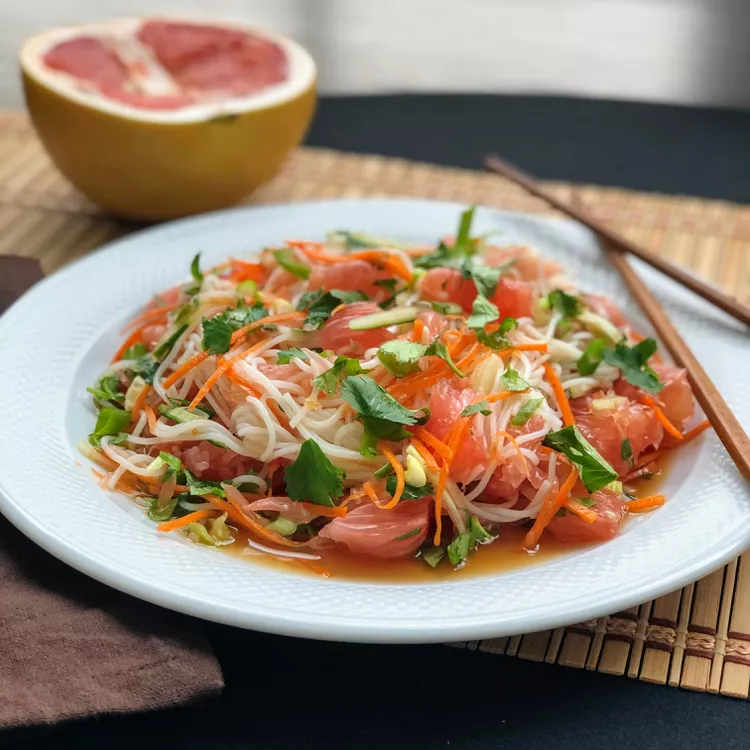

Pomelo Salad Rice

"An Asian-inspired salad that is both lightand refreshing, with only 4 SmartPoints per serving on the WW Green plan."
Ingredients
- 2 ounces rice vermicelli
- ½ large pomelo- peeled, membranes removed, and cut into bite-sized pieces
- ¼ cup julienned carrot
- ¼ cup julienned cucumber
- 1 scallion, thinly sliced
- 2 tablespoons chopped cilantro